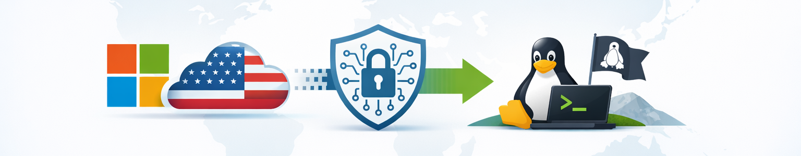

In Diskussionen über digitale Souveränität taucht ein Satz immer wieder auf: „Steigt doch einfach auf Linux um, dann seid ihr unabhängig von Microsoft und Google.“ Das klingt nach einer klaren, einfachen Lösung, fast schon wie ein Zauberspruch. Doch wer sich in der Praxis damit beschäftigt, merkt schnell: So einfach ist es eben nicht.

Dieser Artikel soll nicht gegen Linux sprechen, im Gegenteil. Linux ist ein großartiges Betriebssystem und ein wichtiger Baustein für mehr Unabhängigkeit. Aber er soll aufzeigen, warum der oft erhobene Zeigefinger in diese Richtung mehr verschleiert als erklärt, und weshalb digitale Souveränität mehr ist als nur ein Wechsel des Betriebssystems.
Was bedeutet digitale Souveränität überhaupt?
Digitale Souveränität heißt, Kontrolle über die eigenen Daten und Werkzeuge zu behalten.
- Nicht von einem einzigen Hersteller abhängig sein.
- Verstehen, was auf dem eigenen Gerät passiert.
- Selbst entscheiden können, welche Software man nutzt und wem man vertraut.
Das klingt einfach, ist aber in einer Welt, in der wir uns an Windows, Android und Google-Dienste gewöhnt haben, eine große Herausforderung. Und: Souveränität ist ein Prozess, kein Schalter, den man einfach umlegt.
Warum Linux nicht die Universallösung ist
Linux hat viele Stärken: Offen, transparent, flexibel, kostenlos. Wer Server betreibt, kennt die Vorteile längst. Aber im Alltag gibt es Stolpersteine, die man nicht übersehen darf:
- Kompatibilität: Viele Spezialprogramme gibt es nur für Windows. Sei es Buchhaltungssoftware, CAD-Tools oder bestimmte Spiele, auf Linux ist das oft gar nicht oder nur über Umwege möglich.
- Komplexität: Was unter Windows mit wenigen Klicks geht, erfordert unter Linux manchmal Terminalbefehle oder Handarbeit. Für technisch versierte Nutzer spannend, für andere eher abschreckend.
- Fragmentierung: Es gibt nicht „das Linux“. Stattdessen existieren Dutzende Distributionen mit unterschiedlichen Konzepten. Das ist Vielfalt, aber eben auch Verwirrung.
- Eigene Erfahrung: Ich selbst habe viele Skripte und Programme entwickelt u.a. in Node.js, Typescript, Python, C# und Batch. Während Node.js, Typescript und Python mehr oder weniger sofort laufen, sind Batch und andere kaum direkt portierbar. Die Migration ist richtig Arbeit.
Konkrete Szenarien aus dem Alltag
Anwender mit einem vertrauten Windows-PC
Viele Menschen nutzen ihren Windows-PC bereits seit Jahren. Sie schreiben E-Mails, surfen im Internet, bearbeiten Dokumente oder verwalten ihre persönlichen Unterlagen. Die Bedienung ist ihnen vertraut, die Programme sind eingerichtet und die alltäglichen Abläufe funktionieren.
Wenn man diesen Anwendern nun empfiehlt: „Installiert doch einfach Linux, dann seid ihr digital unabhängiger“, wird häufig übersehen, was damit verbunden ist. Eine neue Benutzeroberfläche, eine andere Bedienung, ungewohnte Programme und möglicherweise Schwierigkeiten beim Öffnen oder Austauschen vorhandener Dokumente. Was für technisch versierte Menschen ein interessantes Projekt sein kann, bedeutet für andere zunächst einmal Unsicherheit und zusätzlichen Aufwand.
Ein Betriebssystemwechsel ist deshalb nicht automatisch ein Schritt nach vorne. Gerade Menschen, die ihren Computer hauptsächlich als Werkzeug für alltägliche Aufgaben nutzen, brauchen vor allem eine Umgebung, die zuverlässig funktioniert und mit der sie vertraut sind.
Ein erster Schritt kann darin bestehen, einzelne Programme unter Windows durch freie Alternativen zu ersetzen: beispielsweise Firefox statt Edge, LibreOffice statt Microsoft Office oder Thunderbird statt Outlook.
Auch das ist nicht unbedingt ein Selbstläufer. Neue Programme bringen andere Bedienkonzepte mit sich und können beim Austausch von Dateien zu Problemen führen. Dennoch lässt sich so schrittweise mehr Unabhängigkeit erreichen, ohne gleich das gesamte Betriebssystem wechseln zu müssen.
Über Jahre gewachsene Programme und Skripte
Wer sich über viele Jahre eine eigene Arbeits- und Entwicklungsumgebung aufgebaut hat, kennt das Problem: Es entstehen immer neue Programme, Hilfsskripte und Automatisierungen. Manche werden in Node.js, Typescript geschrieben, andere in Python, wieder andere in Batch oder C#. Dazu kommen möglicherweise weitere Programmiersprachen und Werkzeuge, die im Laufe der Zeit hinzugekommen sind.
Diese gewachsene Umgebung lässt sich nicht einfach auf ein anderes Betriebssystem übertragen. Zwar laufen viele Node.js- und Python-Anwendungen grundsätzlich auch unter Linux, doch spätestens bei Windows-spezifischen Funktionen, Batch-Dateien, C# oder bestimmten Bibliotheken beginnen die Schwierigkeiten. Vieles müsste angepasst, ersetzt oder sogar neu entwickelt werden.
Natürlich kann man versuchen, solche Abhängigkeiten von Anfang an zu vermeiden und möglichst plattformneutral zu entwickeln. Das setzt allerdings voraus, dass man bereits bei der Entwicklung einen späteren Betriebssystemwechsel berücksichtigt. In der Praxis entsteht eine solche Umgebung aber oft über viele Jahre hinweg. Anforderungen ändern sich, neue Programme kommen hinzu und bestehende Skripte werden immer wieder erweitert. Nicht jeder denkt dabei schon an einen möglichen Wechsel zu Linux.
Wer langfristig unabhängig vom Betriebssystem bleiben möchte, kann schon bei neuen Entwicklungen auf Plattformunabhängigkeit achten:
- Möglichst Programmiersprachen und Bibliotheken verwenden, die unter Windows und Linux verfügbar sind.
- Dateipfade und Betriebssystembefehle nicht fest im Programm verankern, sondern möglichst flexibel gestalten.
- Betriebssystemspezifische Funktionen von der eigentlichen Programmlogik trennen.
- Für neue grafische Oberflächen plattformübergreifende Lösungen wie Python mit Tkinter in Betracht ziehen.
Auch unter Windows lassen sich mit Git Bash oder WSL bereits Bash-Skripte und Linux-Werkzeuge nutzen. Das erleichtert den Einstieg, ersetzt aber keine vollständige Linux-Testumgebung.
Das sind sinnvolle Maßnahmen für neue Projekte. Eine über Jahre gewachsene Sammlung bestehender Programme und Skripte lässt sich damit allerdings nicht nachträglich ohne Aufwand portieren.
Die kleine Firma mit Spezialsoftware
Ein kleiner Handwerksbetrieb nutzt eine Buchhaltungs- und Auftragssoftware, die ausschließlich für Windows entwickelt wurde. Darüber werden Angebote erstellt, Aufträge verwaltet, Rechnungen geschrieben und Kundendaten gepflegt. Die Software ist seit Jahren im Einsatz und auf die Arbeitsabläufe des Betriebs abgestimmt.
Ein Wechsel auf Linux wäre hier nicht einfach eine Frage des Betriebssystems. Wenn die zentrale Software dort nicht verfügbar ist, müsste der Betrieb eine geeignete Alternative finden, Daten übertragen und möglicherweise seine gesamten Arbeitsabläufe umstellen. Das kostet Zeit und Geld. Außerdem ist nicht selbstverständlich, dass eine andere Lösung alle benötigten Funktionen bietet.
Für einen kleinen Betrieb kann ein solcher Wechsel deshalb wirtschaftlich kaum sinnvoll oder überhaupt realisierbar sein. Die Abhängigkeit von Windows entsteht hier nicht unbedingt aus Bequemlichkeit, sondern aus konkreten betrieblichen Anforderungen.
Auch ohne die zentrale Software sofort ersetzen zu können, gibt es Möglichkeiten, die Abhängigkeit schrittweise zu reduzieren:
- Offene Datenformate nutzen: Die Software sollte Daten beispielsweise als CSV oder XML exportieren können. Das erleichtert einen späteren Wechsel zu einer anderen Lösung.
- Dokumente unabhängig verwalten: Angebote, Rechnungen und andere Unterlagen können zusätzlich in offenen Formaten gespeichert und über eine unabhängige Plattform wie Nextcloud ausgetauscht werden.
- Alternativen frühzeitig prüfen: Es kann sinnvoll sein, sich bereits vor einem notwendigen Wechsel mit anderen Softwarelösungen zu beschäftigen und deren Import- und Exportmöglichkeiten zu testen.
Das ersetzt keine geeignete Alternative zur Spezialsoftware. Es schafft aber Spielraum und verhindert, dass sämtliche Daten und Arbeitsabläufe dauerhaft an einen einzigen Anbieter gebunden bleiben.
Kleine Schritte zur digitalen Souveränität
Digitale Souveränität bedeutet nicht, von heute auf morgen alles auf Linux umzustellen. Viel sinnvoller ist es, in kleinen Schritten mehr Unabhängigkeit zu gewinnen:
- Freie Software nutzen: LibreOffice statt MS Office, Thunderbird statt Outlook, Firefox statt Chrome.
- Offene Formate bevorzugen: ODF, PDF oder Markdown statt proprietärer Dateitypen.
- Cloud-Dienste hinterfragen: Muss es wirklich OneDrive oder Google Drive sein? Nextcloud, Proton Drive oder andere Alternativen geben mehr Kontrolle.
- Plattformneutral entwickeln: Wer Skripte oder Software schreibt, kann sie so gestalten, dass sie auf mehreren Systemen laufen und sich später leichter von Windows lösen.
Linux kann Teil dieser Strategie sein, muss es aber nicht sofort sein.
Langfristige Realisierbarkeit
Hier stellt sich die große Frage: Ist digitale Souveränität für den Anwender überhaupt langfristig realistisch?
Die ehrliche Antwort lautet: Nur teilweise.
- Windows, Google und Apple haben eine Marktmacht aufgebaut, die schwer zu durchbrechen ist.
- Die Integration ihrer Dienste ist extrem bequem, vom Cloud-Speicher bis zur Office-Suite.
- Europäische Alternativen sind vorhanden, aber oft kleiner, weniger integriert und mit Kompatibilitätsproblemen behaftet.
- Viele Anwendungen, Dateiformate und Arbeitsabläufe sind inzwischen so eng miteinander verzahnt, dass ein Wechsel weitreichende Folgen haben kann.
Komplette Unabhängigkeit ist daher für den einzelnen Nutzer kaum erreichbar. Aber Teil-Souveränität ist machbar und sinnvoll.
Digitale Souveränität sollte man als Spektrum verstehen:
- Auf der einen Seite maximale Abhängigkeit (alles bei Google oder Microsoft).
- Auf der anderen Seite maximale Selbstbestimmung (eigene Server, offene Software, möglichst viel Kontrolle über die eigenen Daten).
Die meisten von uns bewegen sich irgendwo dazwischen. Und jeder Schritt in Richtung mehr Unabhängigkeit kann sinnvoll sein.
Langfristig wird es entscheidend sein, wie Politik, öffentliche Verwaltung und Bildungseinrichtungen handeln. Wenn sie offene Standards einfordern und fördern, schaffen sie ein Umfeld, in dem auch Anwender mehr Wahlfreiheit haben.
Allerdings stellt sich dabei eine grundsätzliche Frage: Wie glaubwürdig ist die Forderung nach mehr digitaler Souveränität, wenn öffentliche Einrichtungen selbst weiterhin stark auf die Ökosysteme internationaler Technologiekonzerne setzen? Microsoft 365, Google Cloud und andere Plattformdienste sind längst auch im öffentlichen Sektor angekommen. Damit entstehen Abhängigkeiten, die sich nicht einfach durch politische Absichtserklärungen auflösen lassen.
Es ist widersprüchlich, wenn Bürgern und Unternehmen mehr Unabhängigkeit empfohlen wird, während staatliche Institutionen selbst Schwierigkeiten haben, sich aus bestehenden technologischen Abhängigkeiten zu lösen.
Digitale Souveränität muss deshalb auf allen Ebenen beginnen. Sie darf nicht allein zur Aufgabe des einzelnen Anwenders werden. Politik und öffentliche Einrichtungen müssen mit gutem Beispiel vorangehen, Alternativen schaffen und deren Einsatz auch praktisch ermöglichen.
Europa wird nicht dadurch digital souverän, dass es Unabhängigkeit fordert, sondern erst dann, wenn es auch in der Lage ist, sie umzusetzen.
Aufklärung statt Ideologie
Digitale Souveränität ist wichtig. Aber sie wird nicht dadurch erreicht, dass man Menschen mit dem moralischen Zeigefinger belehrt oder sie mit einem schnellen „Installiert doch Linux!“ abspeist. Für viele ist ein Umstieg mit realen Hürden verbunden, technischer, praktischer und manchmal auch emotionaler Art.
Stattdessen sollten wir ehrlich aufklären:
- Ja, Linux kann helfen.
- Nein, es ist nicht für jeden sofort die beste Lösung oder auch überhaupt keine Lösung.
- Und: Souveränität beginnt nicht beim Betriebssystem, sondern bei bewussten Entscheidungen im Alltag.
So schaffen wir ein realistisches Bild und machen den Weg frei für echte digitale Selbstbestimmung, Schritt für Schritt, ohne Ideologie, aber mit klarem Ziel.
Mehr zum Thema Digitale Souveränität
📚 Teil der Serie: Digitale Souveränität
- Mastodon und Bluesky lohnenswerte Alternativen zu Twitter
- Pixelfed: Was steckt hinter der datenschutzfreundlichen Instagram-Alternative?
- Pixelfed vs. Instagram: Datenschutz und mehr, ein Vergleich
- Was ist das Fediverse und welche Anwendungen gehören dazu?
- Digitale Souveränität: Warum sie wichtig ist und wie wir sie erreichen können
- Wie sicher sind deine Daten in der Cloud? Eine Analyse mit Alternativen
- Datenschutzfreundliche Browser, Alternativen zu Chrome
- Digitale Souveränität: Warum „Wechsele einfach zu Linux!“ zu kurz gedacht ist